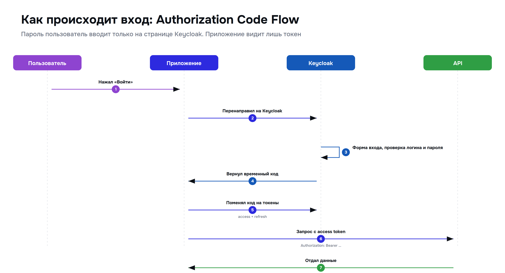

Поток OAuth 2.0: Authorization Code Flow
В предыдущей главе мы познакомились с основами OAuth 2.0 и узнали о различных типах грантов. Теперь пришло время детально разобрать самый популярный и безопасный из них — Authorization Code Flow. Именно этот поток используется в большинстве веб-приложений, включая кнопки «Войти через Google» и «Войти через VK».
Authorization Code Flow считается золотым стандартом OAuth 2.0, потому что он не передаёт токен доступа напрямую через браузер пользователя. Вместо этого используется промежуточный код, который обменивается на токен на стороне сервера. Это значительно повышает безопасность.
Участники процесса
Прежде чем разбирать шаги, вспомним участников процесса:
- Пользователь (Resource Owner) — вы, владелец аккаунта в Google/VK.
- Клиентское приложение (Client) — сайт, на котором вы нажимаете «Войти через Google».
- Сервер авторизации (Authorization Server) — сервер Google/VK, который проверяет вашу личность.
- Сервер ресурсов (Resource Server) — сервер Google/VK, который хранит ваши данные (профиль, email, контакты).
Пошаговый процесс Authorization Code Flow
Процесс состоит из шести ключевых шагов. Давайте разберём каждый из них подробно.
Шаг 1: Пользователь инициирует вход
Пользователь находится на сайте клиентского приложения (например, на сайте интернет-магазина) и нажимает кнопку «Войти через Google». Клиентское приложение формирует специальную ссылку на сервер авторизации Google и перенаправляет туда браузер пользователя.
Эта ссылка содержит несколько важных параметров:
client_id— уникальный идентификатор приложения, зарегистрированного в Google.redirect_uri— адрес, куда Google должен вернуть пользователя после авторизации.response_type=code— указание, что мы хотим получить именно код (а не токен напрямую).scope— список запрашиваемых прав доступа (например,email profile).state— случайная строка для защиты от CSRF-атак.
Шаг 2: Пользователь авторизуется у провайдера
Браузер пользователя перенаправляется на страницу входа Google. Здесь пользователь вводит свой логин и пароль напрямую на сайте Google. Клиентское приложение (интернет-магазин) никогда не видит эти учётные данные — это ключевое преимущество OAuth.
Если пользователь уже вошёл в свой аккаунт Google в этом браузере, этот шаг может быть пропущен — Google просто покажет экран согласия.
Шаг 3: Пользователь даёт согласие
После успешной аутентификации Google показывает пользователю экран согласия (Consent Screen). На этом экране чётко указано:
- Какое приложение запрашивает доступ (например, «Интернет-магазин "Ромашка"»).
- К каким данным оно хочет получить доступ (email, имя, аватар).
- Кнопки «Разрешить» и «Отмена».
Пользователь может как разрешить, так и отказать в доступе. Если он нажимает «Отмена», процесс прерывается, и приложение не получает никаких данных.
Шаг 4: Сервер авторизации возвращает код
Если пользователь нажал «Разрешить», сервер авторизации Google генерирует короткий одноразовый Authorization Code (код авторизации) и перенаправляет браузер пользователя обратно на redirect_uri клиентского приложения, добавляя этот код в URL.
Пример URL возврата:
https://myshop.com/callback?code=4/P7q7W91a-oMsCeLvIaQm6bTrgtp7&state=xyz123Важно: этот код одноразовый и живёт очень короткое время (обычно около 10 минут). Его нельзя использовать повторно.
Шаг 5: Обмен кода на токен (на сервере!)
Это самый важный шаг с точки зрения безопасности. Клиентское приложение (его серверная часть, не браузер!) берёт полученный код и отправляет его напрямую на сервер авторизации Google, чтобы обменять на Access Token.
Этот запрос включает:
code— полученный код авторизации.client_id— идентификатор приложения.client_secret— секретный ключ приложения (хранится только на сервере!).redirect_uri— тот же адрес, что и в шаге 1.grant_type=authorization_code— тип гранта.
Google проверяет все параметры и, если всё верно, возвращает JSON-ответ с токенами:
{
"access_token": "ya29.a0AfH6SMBx...",
"token_type": "Bearer",
"expires_in": 3599,
"refresh_token": "1//04...",
"scope": "email profile"
}Шаг 6: Использование Access Token
Теперь клиентское приложение имеет Access Token и может использовать его для получения данных пользователя с Resource Server. Токен передаётся в заголовке каждого запроса:
GET /userinfo HTTP/1.1
Host: www.googleapis.com
Authorization: Bearer ya29.a0AfH6SMBx...В ответ приложение получает данные пользователя (email, имя, аватар) и может создать для него учётную запись в своей системе или войти в существующую.
Визуальная схема потока
На изображении ниже наглядно показан весь процесс Authorization Code Flow со всеми участниками и шагами:

Зачем нужен промежуточный код?
Может показаться, что проще было бы сразу вернуть Access Token в браузер (как это делает устаревший Implicit Flow). Но использование промежуточного кода даёт важное преимущество безопасности:
- Access Token не проходит через браузер пользователя. Он передаётся только между сервером приложения и сервером авторизации по защищённому каналу.
- Код одноразовый и короткоживущий. Даже если злоумышленник перехватит его в URL, он не сможет им воспользоваться без
client_secret, который хранится только на сервере приложения. - Защита от CSRF. Параметр
stateпозволяет убедиться, что ответ пришёл именно на наш запрос, а не был подставлен злоумышленником.
Роль Refresh Token
В ответе на шаге 5 мы видели не только Access Token, но и Refresh Token. Давайте разберёмся, зачем он нужен.
Access Token живёт недолго (в примере выше — 3599 секунд, то есть около часа). Это сделано из соображений безопасности: если токен будет скомпрометирован, злоумышленник сможет использовать его лишь ограниченное время.
Но пользователю неудобно входить заново каждый час. Здесь на помощь приходит Refresh Token:
- Когда Access Token истекает, клиентское приложение обнаруживает это по ошибке
401 Unauthorizedот сервера ресурсов. - Приложение отправляет Refresh Token на специальный эндпоинт сервера авторизации (
/tokenс параметромgrant_type=refresh_token). - Сервер авторизации проверяет Refresh Token и выдаёт новую пару: свежий Access Token и (опционально) новый Refresh Token.
- Приложение продолжает работу с новым Access Token, а пользователь ничего не замечает.
Refresh Token живёт значительно дольше (дни, недели или даже месяцы) и хранится в безопасном месте на сервере приложения. Если нужно полностью отозвать доступ (например, пользователь нажал «Выйти» или «Отозвать доступ» в настройках Google), сервер авторизации просто удаляет Refresh Token из своей базы.
Другие типы грантов: краткий обзор
Хотя Authorization Code Flow — самый популярный, OAuth 2.0 поддерживает и другие сценарии:
- Client Credentials — используется для общения между сервисами (M2M). Например, ваш бэкенд обращается к API Google Cloud. Здесь нет пользователя, есть только приложение со своими правами.
- Device Code — для устройств без удобного ввода (Smart TV, принтеры). Пользователь заходит на специальный сайт с компьютера и вводит код, показанный на экране устройства.
- Resource Owner Password — устаревший тип, где пользователь вводит пароль напрямую в приложение. Не рекомендуется, но иногда используется в доверенных приложениях от самих провайдеров (например, официальное приложение Google).
Краткое резюме
Authorization Code Flow — это безопасный и надёжный способ делегирования доступа в OAuth 2.0. Его ключевая особенность — использование промежуточного одноразового кода, который обменивается на токен на сервере, что защищает токен от перехвата в браузере. Понимание этого потока необходимо любому разработчику, работающему с социальной авторизацией или интеграцией со сторонними API.
Теперь, когда мы разобрали оба основных стандарта — JWT и OAuth — пришло время сравнить их между собой и с классическими сессиями, чтобы понять, какой подход лучше подходит для разных задач.